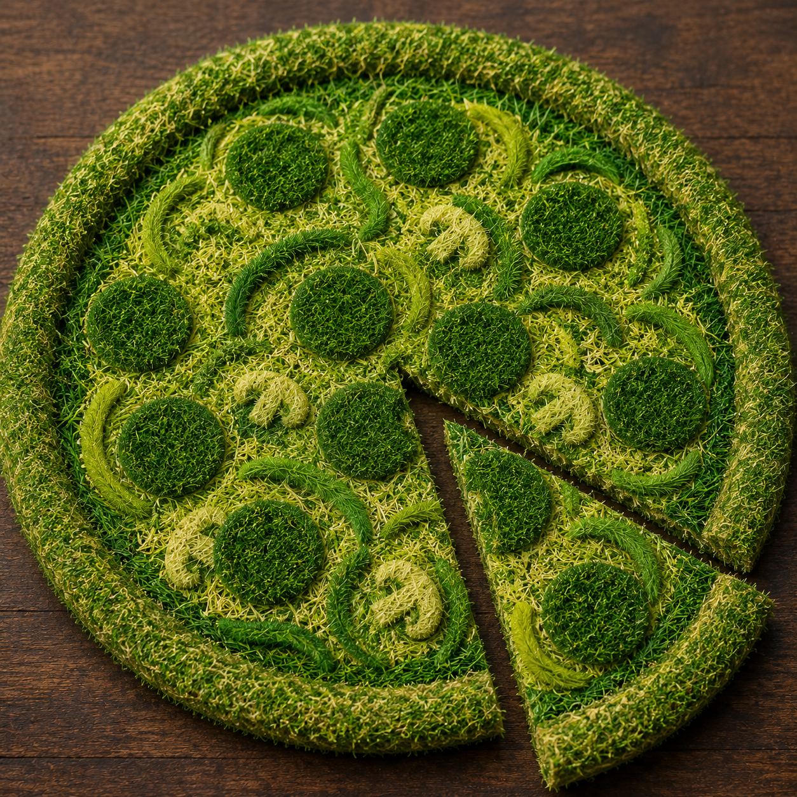

Home
Wild Grass & Herb Pizza

Description
Don't worry—we aren't pulling up actual lawn grass! This "Grass Pizza" gets its name from its vibrant, nature-inspired green look. Built on a rich, aromatic basil pesto base and blanketed with peppery arugula, fresh microgreens, and herbs right after baking, it is earthy, crisp, and bursting with fresh garden flavor.
Ingredients
- 1 pizza dough ball
- 1/2 cup basil pesto (used as your sauce base)
- 1 1/2 cups shredded mozzarella cheese
- 2 cups fresh arugula (the "grass")
- A handful of fresh microgreens or chopped chives
- 1 tablespoon extra virgin olive oil
- A splash of fresh lemon juice
- Flaky sea salt to taste
Steps
- Preheat your oven to the highest setting (around 250°C / 475°F).
- Roll out your pizza dough on a floured surface or sheet of parchment paper.
- Spread an even layer of basil pesto across the dough instead of red tomato sauce.
- Top evenly with shredded mozzarella cheese.
- Bake in the oven for 10–12 minutes until the crust is golden and the cheese is bubbly.
- While the pizza bakes, toss the fresh arugula, microgreens, olive oil, and lemon juice in a small bowl.
- Remove the hot pizza from the oven and immediately pile the fresh green mixture on top like a lawn of fresh grass.